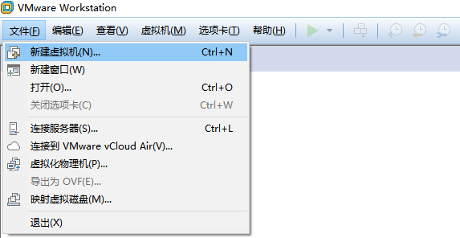
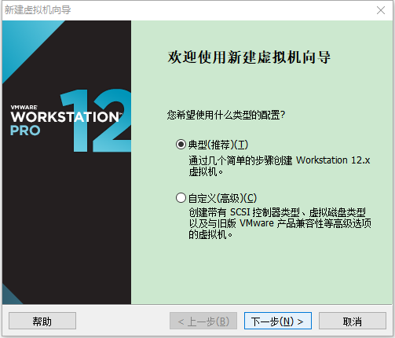
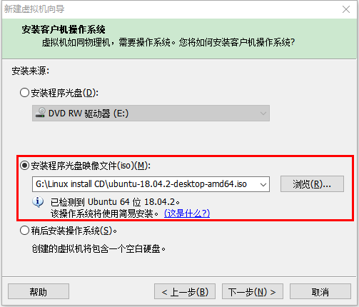
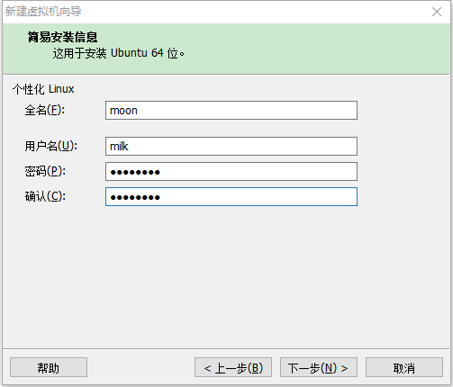
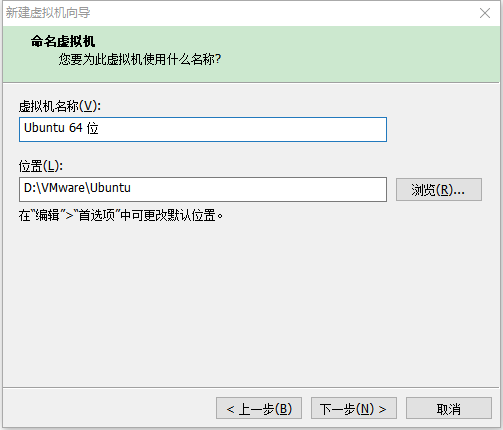
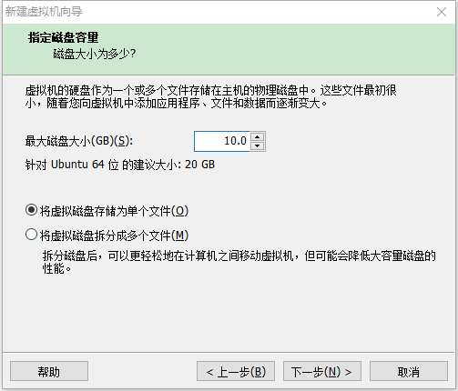
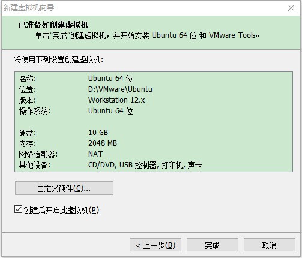
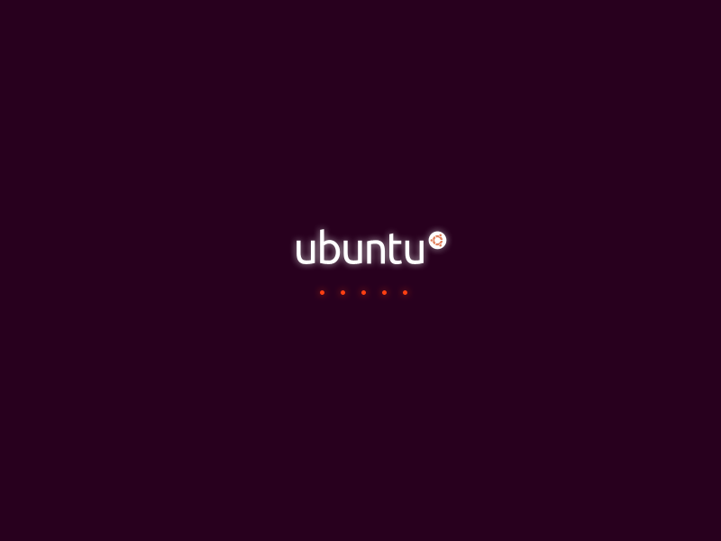
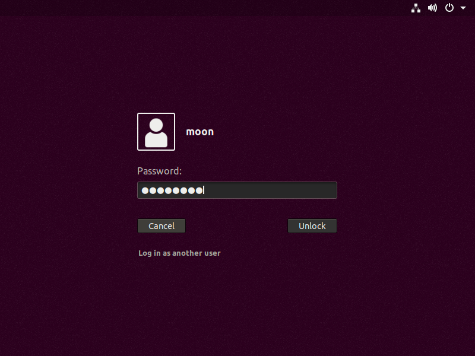
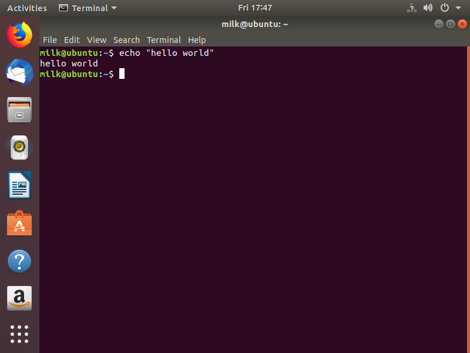

VMware Pro 安装Ubuntu 18.04
写在前面
目标：先进入 Linux 系统中！
选择 Ubuntu 原因：安装操作较为简便。
操作平台
操作系统：Windows10 64 位
虚拟机：VMware Workstation Pro
百度云
(附带许可证密钥，可能会有失败的密钥)
安装镜像：Ubuntu 18.04 Desktop
Ubuntu 官方网站
使用 VMware
新建
下一步
选择你的 iso 文件
根据个人喜好填写信息
如果你选择了简易安装：那么没有语言选择等其他操作… 获得成就：竟然比 Windows 安装还简单!
VMware 独有
命名虚拟机并选择在本地磁盘中的位置
确认虚拟机空间大小

根据个人需求划分。确认虚拟机配置，根据需要自行调节
开始安装

等待安装…进入系统
say hello
向你的系统打招呼吧！
Ctrl + Alt + t打开 Terminal
输入echo "hello world",回车

总结
Linux 的学习已经起步。
我们的征途是星辰大海！
comment:
- LiveRe
- Valine